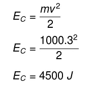
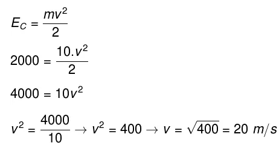
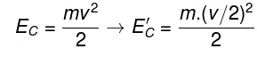
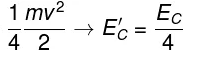
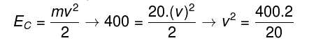
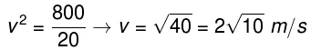
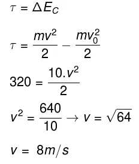
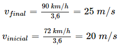
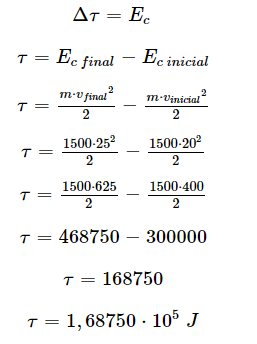
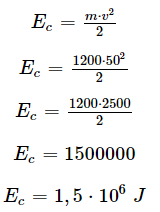

Exercícios
(Enem 2015) 1- Uma análise criteriosa do desempenho de Usain Bolt na quebra do recorde mundial dos 100 metros rasos mostrou que, apesar de ser o último dos corredores a reagir ao tiro e iniciar a corrida, seus primeiros 30 metros foram os mais velozes já feitos em um recorde mundial, cruzando essa marca em 3,78 segundos. Até se colocar com o corpo reto, foram 13 passadas, mostrando sua potência durante a aceleração, o momento mais importante da corrida. Ao final desse percurso, Bolt havia atingido a velocidade máxima de 12 m/s.
Supondo que a massa desse corredor seja igual a 90 kg, o trabalho total realizado nas 13 primeiras passadas é mais próxima de:
(A) 5,4 . 102 J
(B) 6,5 . 102 J
(C) 8,6 . 102 J
(D) 1,3 . 104 J
(E) 3,2 . 104 J
Mostrar resposta
Alternativa correta: Letra B
2- Assinale a alternativa que represente corretamente a energia cinética de um veículo de 1000 kg de massa que se move a uma velocidade constante de 3 m/s
(A) 450 J
(B) 9000 J
(C) 4500 J
(D) 900 J
(E) 300 J
Mostrar resposta
Alternativa correta: Letra C
Para resolver a questão, basta usarmos a fórmula de energia cinética e substituir os dados informados no enunciado do exercício, confira:
3- Sabe-se que a energia cinética de um corpo é de 2000 J e que a sua massa é de 10 kg. Determine a velocidade com que esse corpo se move e assinale a alternativa correta.
(A) 20 m/s
(B) 40 m/s
(C) 200 m/s
(D) 3 m/s
(E) 10 m/s
Mostrar resposta
Alternativa correta: Letra A
Para resolver a questão, basta aplicarmos a fórmula de energia cinética e substituir os dados informados no enunciado do exercício, confira:
4- Um móvel apresenta energia cinética E e velocidade v>. Em determinado instante, a velocidade desse móvel passa a ser 3v e sua massa permanece constante. A alternativa que apresenta a nova energia cinética desse móvel é:
(A) 3 E
(B) 9 E
(C) 4,5 E
(D) 10 E
(E) E/3
Mostrar resposta
Alternativa correta: Letra B
Como sabemos, a energia cinética depende do quadrado da velocidade, desse modo, quando a velocidade é triplicada, essa energia deve aumentar em um fator de nove vezes.
5- Determine o módulo da energia cinética associada ao movimento de um homem e sua motocicleta, cuja massa é igual a 350 kg e velocidade igual a 72 km/h.
(A) 75.000 J
(B) 150.000 J
(C) 10,5 J
(D) 70.000 J
Mostrar resposta
Alternativa correta: Letra B
Se um corpo desenvolve um movimento uniforme, sua velocidade permanece constante, bem como sua energia cinética, uma vez que não há realização de trabalho sobre o corpo
6- Uma partícula de massa m se desloca com velocidade v. A partir de certo instante, essa partícula passa a se mover com o dobro dessa velocidade. Em relação à energia cinética dessa partícula, assinale a alternativa correta.
(A) A energia cinética da partícula é reduzida a um quarto de seu valor original.
(B) A energia cinética da partícula é reduzida oito vezes.
(C) A energia cinética da partícula torna-se quatro vezes maior que seu valor original.
(D) A energia cinética da partícula não se altera.
(E) A energia cinética da partícula aumenta em oito vezes.
Mostrar resposta
Alternativa correta: Letra A
Para resolver esse exercício, é necessário lembrar que a energia cinética é uma grandeza proporcional ao quadrado da velocidade, portanto, reduzindo-se a velocidade à metade, a energia cinética será igual a um quarto de seu módulo original. Observe o cálculo:
 7- Determine qual é a velocidade em que se move um corpo de 20 kg cuja energia cinética é igual a 400 J.
(A) √5 m/s
(B) √10 m/s
(C) 2√10 m/s
(D) 4√2 m/s
Mostrar resposta
Alternativa correta: Letra C
Para responder ao exercício, vamos fazer uso da fórmula da energia cinética e substituir as informações fornecidas no enunciado; em seguida, para determinarmos a velocidade, vamos fatorar o número 40.
 8- Sobre um objeto de 10 kg em repouso, é realizado um trabalho de 320 J. Determine o módulo da velocidade final desse objeto após a aplicação dessa força e assinale a alternativa correspondente.
(A) 10 m/s
(B) 2 m/s
(C) 4 m/s
(D) 8 m/s
(E) 15 m/s
Mostrar resposta
Alternativa correta: Letra D
Podemos calcular o módulo da velocidade do objeto por meio do teorema trabalho-energia cinética, confira o cálculo abaixo:
9- (FGV) Em alguns países da Europa, os radares fotográficos das rodovias, além de detectarem a velocidade instantânea dos veículos, são capazes de determinar a velocidade média desenvolvida pelos veículos entre dois radares consecutivos. Considere dois desses radares instalados em uma rodovia retilínea e horizontal. A velocidade instantânea de certo automóvel, de 1500 kg de massa, registrada pelo primeiro radar foi de 72 km/h. Um minuto depois, o radar seguinte acusou 90 km/h para o mesmo automóvel.
O trabalho realizado pela resultante das forças agentes sobre o automóvel foi, em Joules, mais próximo de:
(A) 1,5 . 104
(B) 5,2 . 104
(C) 7,5 . 104
(D) 1,7 . 105
(E) 3,2 . 105
Mostrar resposta
Alternativa correta: Letra D
Inicialmente, converteremos a velocidade inicial e final de km/h para m/s:
Então, usaremos o teorema do trabalho e energia cinética:
10- Qual a energia cinética de um carro com massa de 1200 kg que se move com velocidade de 50 m/s?
(A) 1,5 . 105 J
(B) 1,5 .106 J
(C) 1,5 . 107 J
(D) 1,5 . 108 J
(E) 1,5 . 109 J
Mostrar resposta
Alternativa correta: Letra B
Encontraremos o valor da energia cinética por meio da sua fórmula:
